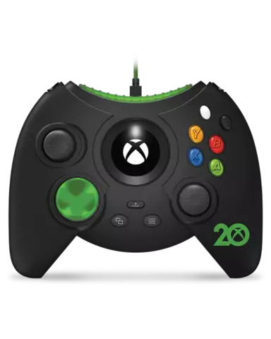
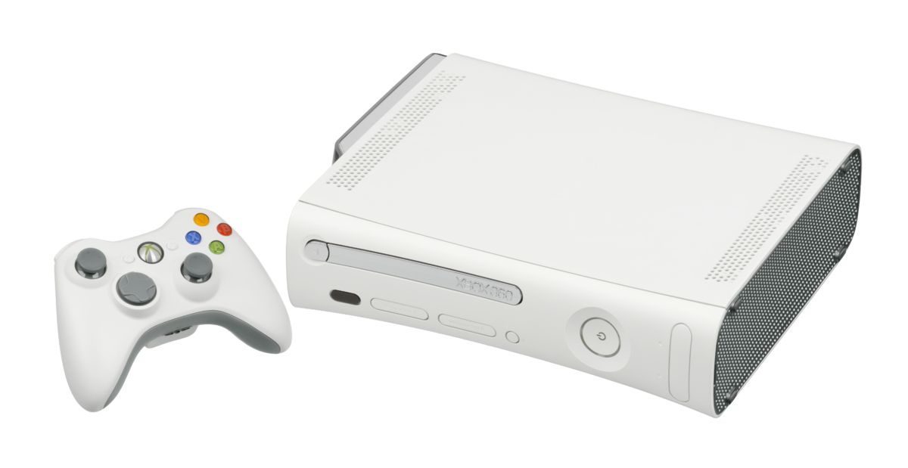
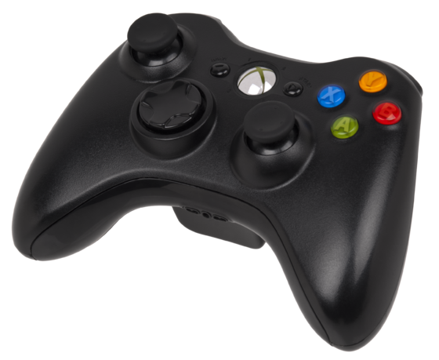
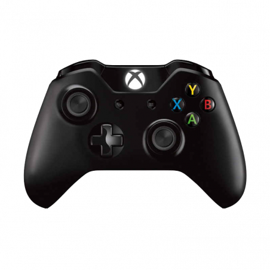
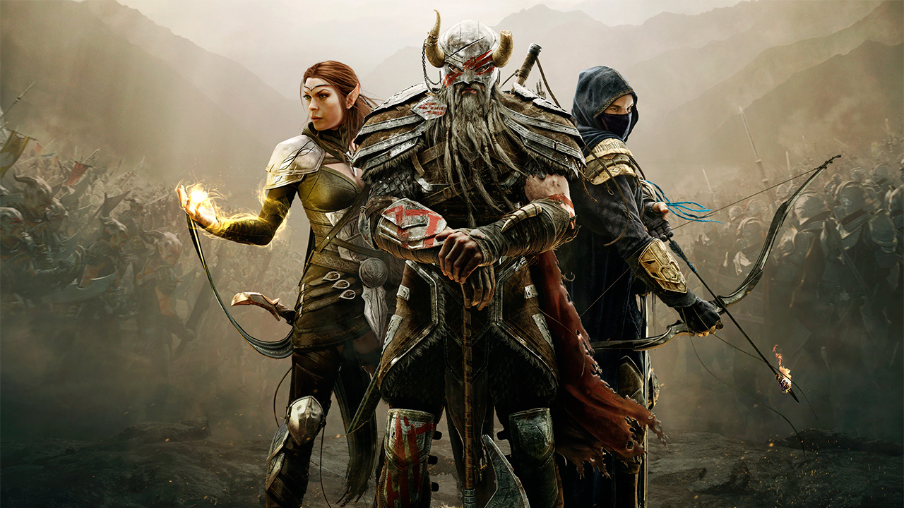
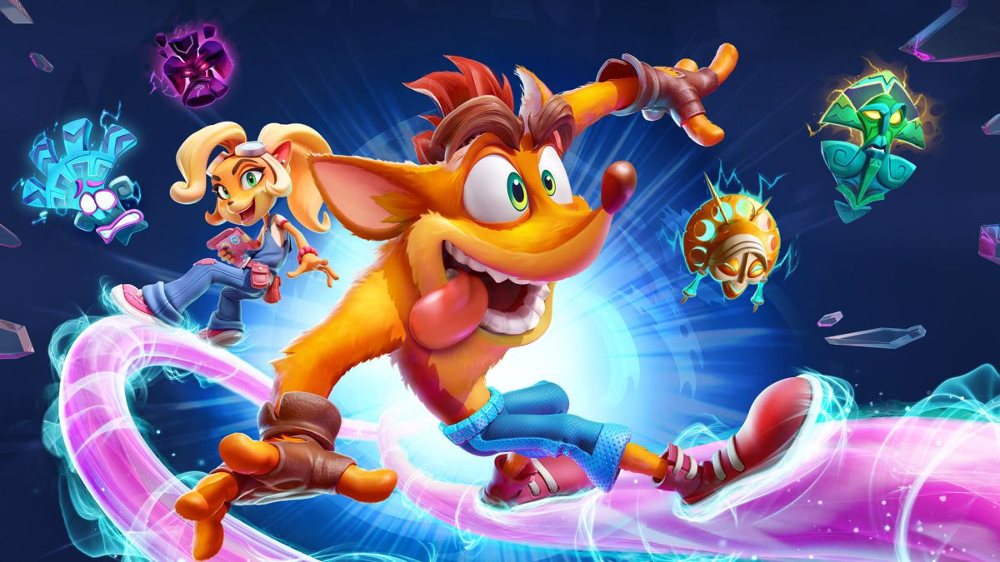
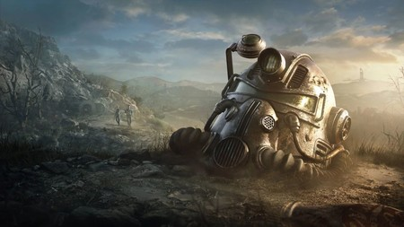
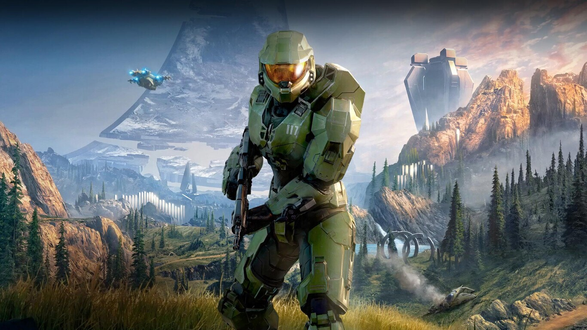

Historia
El origen de Xbox comienzó ayudando a Sega a crear su consola, la DreamCast, concretamente el software para así, enlazar sus juegos de PC en su consola más facilmente. Como les interesaba el sector de las consolas, el mismo Bill Gates se acerco a Nobuyuki Idei, CEO de Sony, para proponerle algo: software de Microsoft para su nueva PS2, que aún no se había anunciado.
Sony dijo que ni de broma, que iban a hacer su propio software. Esto y sumado a que la PS2 iba a reproducir sus juegos en CD y DVDm tenía intranquilo a Bill Gates. Así que se pusieron manos a la obra en crear su propia consola.
Consolas
| Año | Nombre | Consolas | Mando |
|---|---|---|---|
| 2001-2006 | Xbox |  |
 |
| 2005-2009 | Xbox 360 |  |  |
| 2013-2017 | Xbox One | 
|
 |
| 2020-X | Xbox Series X |  |
 |
Franquicias
| Nombre | Imagen | Año | Descripción |
|---|---|---|---|
| The Elder Scrolls |  | 1994 |
En esta serie de videojuegos, el jugador participa en una historia épica en el continente de Tamriel tomando parte fundamental en los acontecimientos, normalmente de carácter apocalíptico, de cada era. Su genero es el de rol. |
| Crash Bandicoot |  | 1996 |
La serie trata de Crash Bandicoot, un marsupial evolucionado por el científico loco Neo Córtex, quien tenía intenciones viles de controlarlo mentalmente para dirigir su ejército de animales mutantes. La historia se desarrolla en unas islas ficticias al sur de Australia. Su genero es el de plataformas 3D. |
| Fallout |  | 1997 |
La trama de los videojuegos se desarrollan en los siglos 22 y 23, aunque prevalece una gran influencia de la cultura de posguerra desarrollada en los años 1950 en Estados Unidos, así como la combinación de esperanza y progreso tecnológico, junto con el miedo a la aniquilación nuclear. Su genero es el de rol. |
| Halo |  | 2001 |
La serie se centra en una guerra interestelar entre la humanidad y una alianza teocrática de alienígenas conocidos como Covenant. Más adelante se encontrarán más amenazas como los Floods y los Prometeos. Sus generos son el de ciencia ficción y disparos en primera persona. |
| Call of Duty |  |
2003 |
Es una serie de videojuegos de disparos en primera persona de estilo bélico. La serie inicialmente se ambientaba en la Segunda Guerra Mundial, relatando personajes y combates acaecidos durante dicho conflicto bélico. |
| Forza Horizon |  |
2005 |
Forza Horizon es un juego de carreras de mundo abierto en torno a un festival ficticio llamado Horizon Festival, en Colorado, Estados Unidos. El objetivo es avanzar a través del juego mediante la obtención de "Pulseras" por conducción rápida, destruir propiedad, ganando carreras y otras habilidades de conducción. |
| Minecraft |  |
2011 |
Minecraft es un videojuego de construcción de mundo abierto en el que no tiene un fin claramente definido, ya que te dejan en un mundo en el que solo viven aldeanos como "personas" y como monstruos tienes esqueletos, zombies y creepers, entre otros. El juego tiene 3 dimensiones, Overworld, Nether y End. |